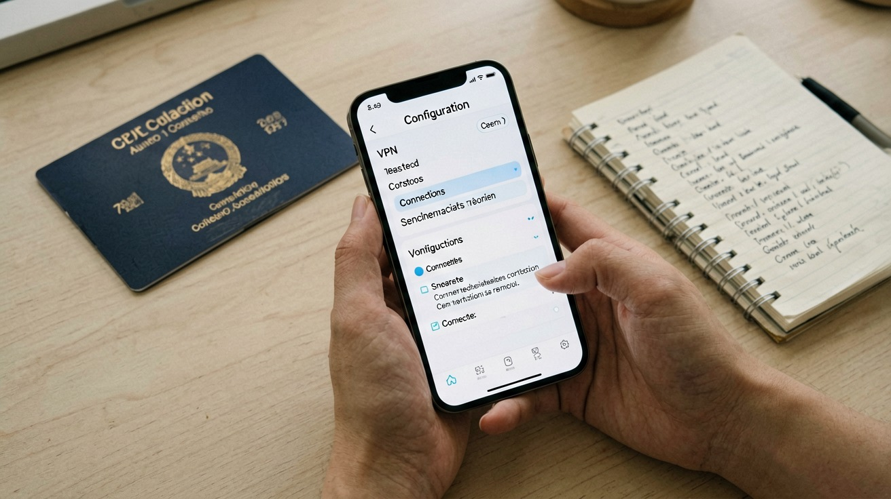

Last updated: June 2026.
You step off the plane in Shanghai, connect to airport Wi-Fi, and open Gmail to send a quick message home. Nothing loads. You switch to WhatsApp — same blank screen. Google, Instagram, The New York Times, your banking app's two-factor push notification — all unreachable. You are not offline. You are behind the Great Firewall, and the VPN you planned to download later is now impossible to access because its website is blocked too.
This is not a worst-case scenario. It is the predictable outcome of arriving in China without a working VPN already installed and tested on your phone and laptop. This article tells you exactly what to do before your flight so that the internet you rely on keeps working from the moment you land. It covers why you need a VPN, how to pick one that actually connects, the critical step of installing and testing it before departure, a practical setup walkthrough, and your backup options — including the legal realities you should know about.
China operates the world's most sophisticated internet filtering system, commonly called the Great Firewall. It does not simply block a static list of websites. It uses multiple layers of detection that evolve continuously: IP address blacklisting for known VPN server endpoints, DNS tampering that returns fake addresses for blocked domains, deep packet inspection that analyses your traffic patterns to identify VPN protocols, and — as of 2026 — machine-learning models that detect previously unknown VPN fingerprint signatures in real time.
The practical result for you is that a wide range of services you use daily will not work on a standard Chinese internet connection. Google services — Search, Gmail, Maps, Drive, YouTube — are blocked. So are Facebook, Instagram, WhatsApp, Twitter, Snapchat, Reddit, TikTok (the international version; the Chinese version, Douyin, is a separate platform), and most major Western news websites including CNN, BBC, The New York Times, and The Wall Street Journal. Wikipedia works intermittently. Many cloud services — Dropbox, certain Google Workspace features, and some CDN endpoints — are unreachable or crippled by packet loss.
Some things will surprise you by working fine. Apple iMessage typically connects without a VPN. Microsoft services — Outlook, Teams, Office 365 — generally function. Amazon loads, though AWS console pages can be slow. But relying on a mental checklist of what works and what does not is exhausting and unreliable. The firewall's blocklists shift. A site that loads today may fail tomorrow. A VPN eliminates the guesswork.
There is a secondary reason to use a VPN that many first-time visitors overlook: public Wi-Fi security. Hotels, cafes, airports, and even high-speed trains offer open Wi-Fi networks with minimal or no encryption. Running a VPN encrypts all your traffic between your device and the VPN server, protecting your passwords, banking sessions, and private messages from anyone snooping on the same network. In a country where open Wi-Fi is the norm rather than the exception, this matters more than you might think.
Not all VPNs are equal in China. Many services that work flawlessly in Europe or North America fail completely once they encounter the Great Firewall. The difference comes down to protocol design and how aggressively each company updates its circumvention technology.
The single most important feature to look for is obfuscation. A standard VPN connection announces itself as a VPN — its traffic packet headers reveal the protocol being used, and the firewall blocks it on sight. Obfuscated protocols wrap your VPN traffic in a layer that makes it look like ordinary HTTPS web browsing or streaming video. It is not a guarantee against detection, but it is the difference between connecting reliably and failing outright. Every VPN recommended below includes some form of obfuscation. If a service's marketing page does not mention "stealth," "obfuscation," or "camouflage mode" as a specific feature, it is unlikely to work in China.
Here are the services that consistently connect inside China as of mid-2026, based on testing by long-term expats and independent review sites. ExpressVPN uses its proprietary Lightway protocol with automatic obfuscation that activates when the client detects network interference. It is the most user-friendly option — install the app, press connect, and the protocol handles everything behind the scenes. NordVPN offers its NordLynx protocol built on WireGuard with obfuscated server options, plus a large global server fleet that gives you more endpoints to try if one gets blocked. Astrill VPN was purpose-built for the China market and runs two proprietary protocols — StealthVPN and OpenWeb — that are engineered specifically to evade deep packet inspection. Its interface is less polished, but its connection reliability inside China is among the highest in the industry. Mullvad VPN uses WireGuard with bridge mode and is notable for accepting anonymous cash payments and requiring no email address, which appeals to privacy-conscious travellers. Proton VPN includes a Stealth protocol that routes traffic through obfuscated servers and has a free tier, though the free servers are often too congested to maintain a stable connection in China.
A few services to be skeptical of: free VPNs are almost universally unreliable inside China and many have been caught logging user data or injecting ads. VPN browser extensions only protect your browser traffic, not your apps, and rarely include obfuscation. Services that lack a kill switch — the feature that blocks all internet traffic if the VPN disconnects — expose you to accidental unencrypted leaks every time the connection drops.
If you remember only one sentence from this article, make it this one: you cannot download or subscribe to a VPN from inside China. Every major VPN website is blocked by the Great Firewall. Their payment gateways are blocked. The App Store and Google Play Store may refuse to display VPN apps or their listings while your device is connected to a Chinese network. If you arrive without a VPN already installed, configured, and paid for, you are locked out of the tools you need to fix the problem.
Here is a checklist to complete at home, ideally a week before your departure. First, subscribe to two different VPN services. Two, not one. The firewall sometimes blocks an entire provider's IP range or protocol signature, and when that happens you need a fallback that uses a completely different infrastructure and codebase. Pick services from the list above and pay for at least one month on each. Use their money-back guarantee periods — many offer 30 days — to test them without financial risk.
Second, download and install the VPN app on every device you plan to use in China: your phone, laptop, and tablet. On phones, download directly from the official app store. Do not wait until you are at the airport — some airport Wi-Fi networks in your home country use filtering that can block VPN downloads, creating an unnecessary last-minute scramble.
Third, test the connection while you are still at home. Open the VPN app, connect to a server, and confirm that blocked services — Google, YouTube, Instagram — load correctly. Do this on every device. Check that the kill switch works by temporarily forcing the VPN to disconnect and verifying that your internet access stops. This is also the moment to save your VPN account credentials somewhere offline, like a password manager that syncs locally or a piece of paper in your wallet. Do not rely on accessing your email to retrieve a password reset link — you may not be able to reach your email without the VPN.
Fourth, configure the VPN to connect automatically on startup if your provider supports it. On iOS and Android, most VPN apps offer an "always-on VPN" or "auto-connect" toggle. Enable it. This ensures that the moment your phone connects to Wi-Fi after landing, the VPN activates without you needing to remember to tap anything.

The installation process is similar across most services, but there are two configuration steps that matter specifically for China that generic setup guides rarely mention.
Start with the standard setup. Download the app from your service provider's website or the official app store, install it, and log in with the account you created. Choose a subscription plan if you have not already — almost all paid VPNs offer monthly, yearly, or multi-year billing, with yearly plans typically costing between forty and one hundred US dollars. Pay with a credit card or PayPal while you are still outside China, as payment processing may fail from a Chinese IP address. Once logged in, the app will usually prompt you to allow system-level VPN configuration — accept this, as it is required for the kill switch and auto-connect features to function.
Now the two China-specific steps. First, enable the obfuscation or stealth mode. In the app settings, look for a toggle labelled something like "Obfuscated Servers" (NordVPN), "Stealth Protocol" (Proton VPN), "StealthVPN" (Astrill), or "Camouflage Mode" (Surfshark). ExpressVPN's Lightway protocol auto-obfuscates; no separate toggle is needed. If your provider offers a choice between obfuscation methods, select the one listed as specifically designed for restrictive networks rather than the general-purpose option.
Second, set your protocol. If your VPN client gives you a protocol menu, choose in this order of preference: the provider's proprietary obfuscated protocol first, WireGuard with obfuscation second, OpenVPN TCP over port 443 third. Avoid OpenVPN UDP for China — the firewall identifies its packet signature more readily. WireGuard without obfuscation is also easily detected. Port 443 is crucial because it is the standard HTTPS port; traffic on port 443 blends into the sea of encrypted web browsing that the firewall cannot block without breaking the entire internet.
Once configured, run a connection test. Connect to a nearby server — Tokyo, Hong Kong, or Singapore usually offer the lowest latency from within China, with typical ping times of 50 to 150 milliseconds. Open a browser and visit a site you know is blocked, such as YouTube or Instagram. If it loads, your setup is working. If not, switch to a different server location and try again. Some servers are individually blacklisted even within a working provider, and rotating through locations is a normal part of finding a stable connection in China.
If you are technically inclined, you can also set up a self-hosted solution. Options include Shadowsocks (a lightweight encrypted proxy), V2Ray with VMess protocol, and Trojan (which disguises traffic as HTTPS). These require renting a virtual private server outside China and configuring the server software yourself. Self-hosted solutions are less likely to be on blocklists than commercial VPN IP ranges, but they demand ongoing maintenance — if your server's IP gets blacklisted, you fix it yourself from outside China. For most travellers, a commercial VPN with obfuscation is the pragmatic choice. Self-hosting is for people who enjoy server administration as a hobby, not a casual travel preparation task.
Even with two VPNs installed and tested, connections inside China can be temperamental. The firewall may block a provider's servers for a few hours and then unblock them. A protocol update on one side may break compatibility until the VPN company pushes a fix. You need a plan for what to do when — not if — your primary VPN stops working temporarily.
The simplest backup is having two different VPN services from the list above. When one fails, disconnect it, wait a few seconds, and connect the other. If both fail, switch your primary VPN to a different protocol and try a different server location. Protocols matter more than server location for circumvention, but both factors interact unpredictably. A third fallback that does not rely on VPN software at all is an international eSIM or roaming data plan. When your phone uses a foreign carrier's roaming data — even while you are physically in China — your traffic tunnels back to your home carrier's network and exits to the internet from outside China, completely bypassing the Great Firewall. This is the most reliable connection method available, but it is also the most expensive. Reserve it for critical moments: a time-sensitive work email, a banking transaction, or a video call you cannot reschedule.
On the legal front, China's 2017 Cybersecurity Law and subsequent regulations require VPN services operating in the country to be licensed by the Ministry of Industry and Information Technology. Unauthorised commercial VPNs — which includes every service listed in this article — are illegal for providers to offer. For individual users, including short-term international visitors, using a personal VPN to access blocked content falls into a regulatory grey area. The law is written to target providers and large-scale commercial use, not tourists checking Gmail. In practice, millions of international visitors, expats, and business travellers use VPNs in China every year without incident. Enforcement against individual travellers is extremely rare in major cities and tourist destinations.
There are two situations where you should exercise particular caution. First, if you travel to sensitive border regions — Xinjiang or Tibet — security checks are more thorough, and devices may be inspected. In these areas, having a VPN app installed has occasionally led to questions from authorities. Second, avoid discussing or posting about VPN usage on Chinese social media platforms such as WeChat or Weibo while you are in the country. Keep your VPN use private, as you would any personal security tool, and you are unlikely to encounter problems.
The practical reality, acknowledged by travel guides, expat forums, and local professionals alike, is that VPN use by international visitors is a tolerated norm. The Chinese government's primary concern is the commercial operation of unauthorised circumvention tools at scale, not the individual traveller trying to access their email. Be discreet, use your VPN for personal communication and information access, and you will be in the same position as millions of travellers before you.
This article is based on information as of June 2026.
Sources
Laws, VPN service availability, and circumvention methods may change rapidly. Verify the latest situation before your trip.